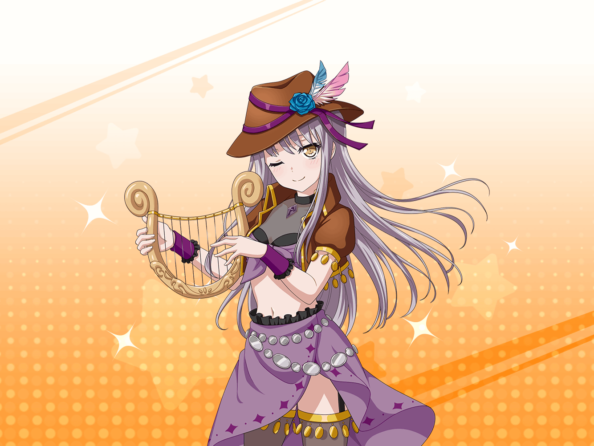

旅立ちの村
聖堕天使あこ姫
友希那さん、鉱山はこっちなので
あこの後ろについて来てくださいねっ！
ユキナ
ええ、わかったわ
ユキナ
……？
あの人……
リサ
どうしたの？ 友希那
ユキナ
さっきすれ違った人が、
私と同じ顔で同じ格好をしていたの
聖堕天使あこ姫
きっと、始めたばっかりの吟遊詩人の人ですねっ！
始めたばかりで同じ職業だと、見た目が似ちゃうことが
あるんですよ
ユキナ
……なんだか気味が悪いわね。
いくらゲームとはいえ、自分と同じ人がいるだなんて
リサ
しょうがないって。
ほら、あっちのほう見てみなよ。
アタシっぽいのがいっぱいだよ？
ユキナ
本当だわ……後ろから見たら、
みんな同じに見えてしまうわね
聖堕天使あこ姫
初期装備だと見分けつかないですし、
あこを目印にしてください！
ユキナ
ええ、それじゃあ進んでちょうだい。
あこなら見間違えることもないでしょうから
リサ
それじゃ、行こっか！

聖堕天使あこ姫
西の鉱山はここをまっすぐ行って、
次のマップを進んだところに……って
友希那さん、どこ行くんですか？
リサ
友希那！
そっちじゃないから。
逆、逆
ユキナ
どうして？
私はあこの後ろを歩いていただけよ
リサ
それあこじゃないってば！
なんか若干あこっぽいけど
本物はこっちだって！
ユキナ
……本当だわ。
見比べれば違うわね
聖堕天使あこ姫
友希那さん、しっかりしてくださいよ〜
全然違うじゃないですかっ！
ユキナ
私には見分けがつかないわ……
リサ
うん、確かに一瞬で見分けるの難しいかも。
慣れない操作しながらだから、余計だよね
聖堕天使あこ姫
それじゃあ、移動はゆっくりにしますね。
全員で固まって移動すれば迷子にはならないと思います
ユキナ
そうしてもらえると助かるわ。
リサ、もし私が離れたらまた呼んでちょうだい
リサ
オッケー☆
任せといて！
リサ
にしてもゲームの世界って面白いね。
現実の世界じゃ友希那があこの後ろついて歩いたり
あこを見間違えたりしないもんね
聖堕天使あこ姫
あこの格好、わかりやすいと思うんだけどなー……
見間違えるなんて……
リサ
あれ！？
友希那がまたいない！？
聖堕天使あこ姫
えぇ！？
友希那さんどこ行っちゃったの〜？
リサ
と、とりあえず、来た道戻ってみようよ。
どこかにいるかもしれないし……
聖堕天使あこ姫
あ、友希那さんいた！
友希那さん、こっちですよ、こっち！
リサ
友希那、どこ向いてるの？
こっちだってば
聖堕天使あこ姫
友希那さん？
おーい、友希那さん？
リサ
どうしたんだろ、友希那かたまってる……？
ユキナさんがログアウトしました
聖堕天使あこ姫
ええっ！？
友希那さん落ちちゃった！？
リサ
あ、ちょっと待って。
友希那から電話だ
リサ
なんかね、画面が急に消えちゃったみたい
聖堕天使あこ姫
ええええ？
電源に触っちゃったのかな……？
リサ
とりあえず友希那のブース行ってパソコン見てくるよ。
ちょっと待っててね〜
聖堕天使あこ姫
リサ姉、お願い！